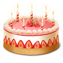

Поздравляем с Днём рождения!
Кирилл Радиевский
Виктория Храновская
Алексей Ванчук
Кирилл Радиевский
Виктория Храновская
Алексей Ванчук
9 мая
1 июня
«Не хочу в детский са-а-а-д! Не пойду-у-у-у!». Эти душераздирающие вопли вы слышите теперь каждое утро. Иногда к воплям добавляются жалобные стоны на тему того, что у драгоценного чадушка болит животик, голова, и вообще его тошнит от сада. В прямом и в переносном смысле слова. А в более тяжелых случаях у ребенка и в самом деле поднимается температура, появляются боли в животе и обостряются хронические заболевания.
Что же делать в такой ситуации? Для начала разобраться, почему ваш малыш ни за какие коврижки не соглашается приобщаться к детскому коллективу. А причин для этого может быть несколько.
Дети – самые великие на свете консерваторы. Это только на первый взгляд кажется, что они постоянно стремятся к новым приключениям и впечатлениям. На самом деле привычный ритм, когда они совершенно точно знают, как одно событие сменяет другое, – это порядок и спокойствие в их жизни. А тут – мама с утра отводит к незнакомой тете, где, кроме тебя, любимого, оказывается, еще куча других детей, бросает там на произвол судьбы и неизвестно, свидишься ли с ней еще когда-нибудь. В саду же все чужое – и, наверное, поэтому враждебное.
Выход
Постепенно приучайте малыша к смене режима. Если он привык поздно ложиться и поздно вставать, придется аккуратно перевести кроху на более ранний подъем. Это совершенно не страшно, смена режима происходит в течение 3-4 дней.
Когда резко меняется образ жизни, важно сохранить для ребенка «кусочек дома». Оптимальный вариант – если вы сможете договориться с заведующей и воспитательницей о том, что сможете присутствовать в группе вместе с ребенком в течение первой недели. Кстати, во многих детских садах практикуют такие договоры на вполне официальной основе, а в вальдорфских детских садах сами воспитатели настойчиво просят маму находиться в группе вместе с ребенком хотя бы в течение десяти дней.
Если же это по каким-то причинам невозможно, подумайте о какой-то приятной мелочи, которая будет напоминать вашему крохе о доме. Это может быть мягкая игрушка (с ней так приятно вместе засыпать!), привычная еда в небольшом контейнере (желательно, не очень пачкающая – подойдет морковка или яблоко). Или, возможно, вам захочется сделать для своего малыша талисман удачи – например, небольшую плоскую игрушку, которую можно всегда носить в кармашке или на шнурке. Когда ее маленький хозяин загрустит, пусть он вспомнит о «волшебном талисмане», и тот непременно поможет справиться с невеселыми мыслями.
Вспомните свое детство – наверняка в вашем детском саду был какой-то особенный «шедевр» местных поваров, который вызывал у вас не самые приятные чувства. Пресловутые пенки от молока, кисель, молочная каша или суп с луком – у каждого свои воспоминания. Иногда воспитатели слишком рьяно пытаются накормить своих подопечных, требуют съедать все до крошки, в быстром темпе – это тоже не каждому под силу.
Выход
Если ваш малыш наотрез отказывается питаться в детском саду, договоритесь с воспитателями, чтобы они не настаивали на этом процессе. В конце концов, еще ни один ребенок по собственной воле не умер от голода. Дома, перед садом, вполне можно обойтись и без завтрака – больше шансов, что к моменту завтрака в садике малыш успеет проголодаться и захочет попробовать что-нибудь с общего стола.
Если по садовским правилам ребенку разрешается брать какую-то еду из дома, то пусть это будут красиво порезанные фрукты (яблоки, груши), овощи (огурец или морковка), подойдет и банан. Старайтесь не давать ребенку сладости вроде конфет или печенья, эти лакомства, конечно, могут утешить в первый момент, но вызовут нездоровый ажиотаж в коллективе и окончательно испортят аппетит.
Это серьезная проблема, и в идеале ее хорошо бы решить еще до поступления ребенка в детский сад. Не зря же психологи рекомендуют перед тем, как определить малыша в то или иное учреждение, обязательно познакомиться не только с заведующей и с набором игрушек в группе, но и (что гораздо важнее!) с будущей воспитательницей. Именно она будет проводить с вашим ребенком большую часть времени. Иногда бывает так, что к одной воспитательнице дети буквально летят на всех парах, а к другой даже подходить не хотят, жмутся к маме.
Выход
Для начала выясните, почему ваш малыш не любит воспитательницу. Сделать это не так-то легко, ведь далеко не всегда маленький ребенок может рассказать о своих впечатлениях и переживаниях. Но вам придут на помощь специальные игры. Вечером, в спокойной обстановке поиграйте с малышом в детский сад с набором плюшевых зверушек или пластмассовых человечков. Вы узнаете для себя массу интересных подробностей! Пусть ребенок сам выберет для себя роль – будет ли он играть за себя самого, за своего «одногруппника» или за ту самую воспитательницу.
Когда вы уясните для себя смысл конфликта, попробуйте обсудить его с воспитательницей. Если же после этого не произойдет никаких положительных сдвигов (педагог жестоко обращается с ребенком, не слышит его, позволяет другим детям дразнить и обижать вашего малыша), то ситуация, увы, тупиковая. Придется подумать о смене детского сада или группы. Причем, в этом случае предпочтительнее сменить сад, чем группу, поскольку во всяком коллективе существует некая корпоративная этика – в том числе, и в детском саду.
Иногда бывает так, что ребенок по каким-то причинам не вписывается в детский коллектив, продолжая держаться особняком. Это может быть индивидуальная особенность – просто у каждого ребенка разные потребности в общении, кому-то нужно общаться больше, кому-то обходиться минимумом «деловых связей». Но если ваш ребенок в течение года так и не занял в детской группе свою нишу, провел все это время как бы «за стеклянной стеной», лишь наблюдая за детской жизнью, стоит обратиться к психологу – это может говорить об аутистических особенностях характера.
Выход
Если ребенку трудно подружиться со сверстниками, придется, как всегда, брать дело в свои руки. Старайтесь постепенно расширять круг общения (как свой, так и детский). Понаблюдайте, кто из одногруппников наиболее симпатичен вашему ребенку, и попробуйте подружиться с его родителями. Чаще приглашайте их в гости. Возможно, поначалу, вам придется самой активно участвовать в их играх для того, чтобы ваш «дикаренок» постепенно и сам мог в них включиться.
Еще один важный момент переходного периода – приучить малыша к мысли о том, что далеко не всегда только с мамой ему может быть комфортно и интересно. Попросите папу или бабушку в ваше отсутствие придумать с ребенком увлекательную игру. Неплохой вариант – студия раннего развития, где дети постепенно вливаются в детский коллектив, не теряя при этом связи с мамой. Другие дети и их игры должны быть, с вашей точки зрения, весьма привлекательным и приятным занятием. Обращайте внимание малыша на то, как детям и весело интересно вместе, как здорово они играют.
Поддаваться на уговоры и провокации. Если вы, несмотря на все детские стоны и жалобные причитания, все-таки довели ребенка до дверей детского сада, но в последний момент ваше родительское сердце не выдержало и вы повернули вместе с ребенком обратно – это очень опасный путь. Малыш поймет, что слезами и криком он сможет добиться желаемого, и в следующий раз ему придется лишь немного увеличить громкость и интенсивность плача.
Водить ребенка в сад через день или пару раз в неделю. Для того, чтобы детский сад стал неизбежной данностью, малыш должен появляться там каждый день (разумеется, кроме выходных). Лучше поначалу пораньше забирать его оттуда. Ничего страшного, если первые недели или даже месяцы вы не будете оставлять его там на дневной сон. Лишь когда ребенок полностью адаптируется к новым условиям жизни, попробуйте забрать его после дневного сна.
Самим бояться разлуки с ребенком. Дети необыкновенно чувствительны. Им на каком-то подсознательном уровне передаются все наши эмоции – и тревога, и спокойствие. Душераздирающая сцена со слезами в раздевалке – совсем не лучшее начало дня для вашего малыша. Отпускайте ребенка с уверенностью, что с ним все будет в порядке.
Инесса Смык
| ‹ | › | |||||
| Пн | Вт | Ср | Чт | Пт | Сб | Вс |